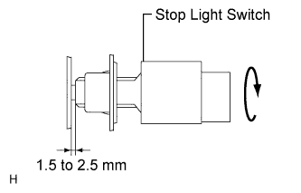

BRAKE PEDAL (for LHD) > ADJUSTMENT |
| 1. CHECK BRAKE PEDAL HEIGHT |
 |
Check the brake pedal height.
 |
Adjust the rod operating adapter length.
Remove the clip and clevis pin.
Loosen the clevis lock nut.
Adjust the rod operating adapter length by turning the pedal push rod clevis.
Tighten the clevis lock nut.
Set the master cylinder push rod clevis in place, insert the push rod pin from the outside of the vehicle and then install a new clip.
If the pedal height is incorrect even if the rod operating adapter is adjusted, check that there is no damage in the brake pedal, brake pedal lever, brake pedal support and dash panel.
| 2. CHECK AND ADJUST STOP LIGHT SWITCH ASSEMBLY |
Disconnect the stop light switch assembly connector from the stop light switch assembly.
Turn the stop light switch assembly counterclockwise and remove the stop light switch assembly.
 |
Insert the stop light switch assembly until the body hits the brake pedal bracket.
Turn the stop light switch assembly a quarter turn clockwise to install it.
Connect the stop light switch connector to the stop light switch assembly.
Check the protrusion of the rod.
After adjusting the pedal height, check the pedal free play.
| 3. CHECK PEDAL FREE PLAY |
 |
Push in the pedal until the beginning of the resistance is felt. Measure the pedal free play.
| 4. CHECK PEDAL RESERVE DISTANCE |
 |
Release the parking brake lever. With the engine running, depress the pedal and measure the pedal reserve distance as shown in the illustration.